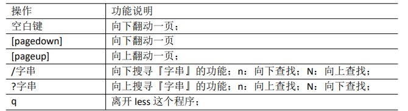
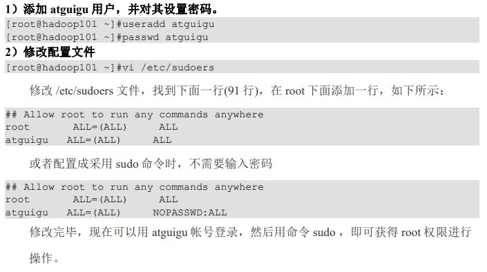
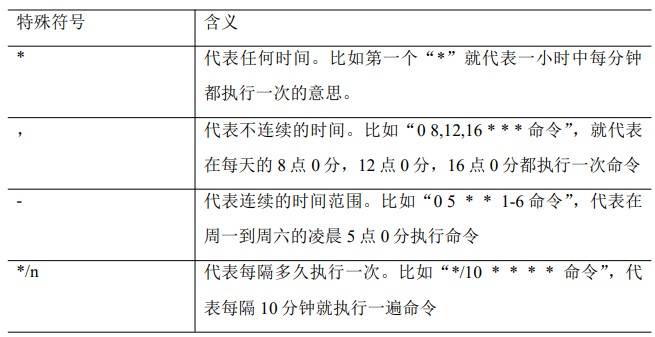
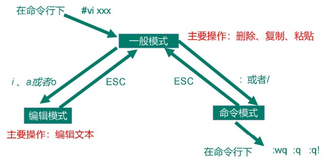
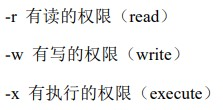

Linux
第一章 Linux操作系统概述
Linux的特点：开放性、多用户、多任务、良好的用户界面、设备独立性、提供丰富的网络功能、可靠的系统安全性、良好的可移植性 、兼容其他Unix系统 、支持多种文件系统
目录结构

/bin: bin 是 Binaries (二进制文件) 的缩写, 这个目录存放着最经常使用的命令。
/usr: usr 是 unix shared resources(共享资源) 的缩写，这是一个非常重要的目录，用户的很多应用程序和文件都放在这个目录下，类似于 windows 下的 program files 目录。
/dev: dev 是 Device(设备) 的缩写, 该目录下存放的是 Linux 的外部设备，在 Linux 中访问设备的方式和访问文件的方式是相同的。
/etc: etc 是 Etcetera(等等) 的缩写,这个目录用来存放所有的系统管理所需要的配置文件和子目录。
/home: 用户的主目录，在 Linux 中，每个用户都有一个自己的目录，一般该目录名是以用户的账号命名的，如上图中的 alice、bob 和 eve。
/srv: 该目录存放一些服务启动之后需要提取的数据。
/var: var 是 variable(变量) 的缩写，这个目录中存放着在不断扩充着的东西，我们习惯将那些经常被修改的目录放在这个目录下。包括各种日志文件。
/lib: lib 是 Library(库) 的缩写这个目录里存放着系统最基本的动态连接共享库，其作用类似于 Windows 里的 DLL 文件。几乎所有的应用程序都需要用到这些共享库。
/lost+found: 这个目录一般情况下是空的，当系统非法关机后，这里就存放了一些文件。
/media: linux 系统会自动识别一些设备，例如U盘、光驱等等，当识别后，Linux 会把识别的设备挂载到这个目录下。
/mnt: 系统提供该目录是为了让用户临时挂载别的文件系统的，我们可以将光驱挂载在 /mnt/ 上，然后进入该目录就可以查看光驱里的内容了。
/opt: opt 是 optional(可选) 的缩写，这是给主机额外安装软件所摆放的目录。比如你安装一个ORACLE数据库则就可以放到这个目录下。默认是空的。
/root: 该目录为系统管理员，也称作超级权限者的用户主目录。
/boot: 这里存放的是启动 Linux 时使用的一些核心文件，包括一些连接文件以及镜像文件。
/tmp: tmp 是 temporary(临时) 的缩写这个目录是用来存放一些临时文件的。
注：Linux存储用户帐号的文件是:/etc/passwd； Linux存储密码和群组名称的文件是:/etc/shadow； Linux存储所有用户的变量设置的文件是/etc/profile。
第二章 Linux系统的环境搭建
Linux操作系统与主机之间的网络构建
网络模式：桥接模式、NAT模式、仅主机模式（一般选择NAT模式）
配置ip地址

#进入编辑/etc/sysconfig/network-scripts/ifcfg-ens33目录
vim /etc/sysconfig/network-scripts/ifcfg-ens33
#设置为静态地址
BOOTPROTO="static"
#IP地址
IPADDR=192.168.101.100
#网关
GATEWAY=192.168.101.2
#域名解析器
DNS1=192.168.101.2
#重启
systemctl restart network
第三章 Linux操作基础
简单命令
当前路径：pwd
日期命令：date
在线用户命令：who
#自己是谁
who am i
日历命令：cal
cal
#查看指定年份在cal后面加上年份（2022）不能缩写成（20）
cal 2022
系统信息命令：uname

su命令切换用户：su
#”-“表示是否切换环境变量
su [-] [用户名]
清屏：clear
统计命令：wc
wc [-lw][-c] 文件名 #-L:统计行数; -W:统计字数; -c:统计字节数;
Shell命令的操作基础
Shell：又称为linux命令，当用户登录后Shell运行进入内存，它遵循一定的语法将输入的命令加以解释并传给系统
命令名称 [选项][参数]
帮助命令：man
man ls
#空格：下一屏
#回车：滚动一行
#q：推出man命令
目录和文件的操作
列出目录的内容：ls
#列出全部文件，包括以.开头的隐藏文件
ls -a
#列出文件的属性和权限等信息，等价于ll
ls -l
切换目录：cd
cd [参数]

创建一个新的目录：mkdir
mkdir [选项] 要创建的目录
mkdir xiyou
mkdir -p xiyou/dssz/meihouwang

删除一个空的目录：rmdir
rmdir 要删除的空目录
创建空文件：touch
touch 要创建的文件
复制文件或目录：cp
cd [选项] 源文件 目标文件
#强制覆盖
/cd

移动文件与目录或重命名：移动文件或重命名
mv 旧名字 新名字
mv 原路径 新路径
删除文件或目录：rm
rm [选项] 要删除的文件

软链接：ln
ln -s [文件或目录][软连接名] #删除软链接： rm -rf 软链接名，而不是 rm -rf 软链接名/
#如果使用 rm -rf 软链接名/ 删除，会把软链接对应的真实目录下内容删掉
查看输出文件操作
查看文件内容：cat
cat [选项] 要查看的文件
文件内容分屏查看器：more
more 要查看的文件 #一次显示一页

分屏显示文件内容：less
less 要查看的文件

显示文件头部内容：head
head [选项] 文件

输出文件尾部内容：tail
tail [选项] 文件
输出重定向和 追加：> >>
ls -l > 文件 #将列表内容写入文件.txt中（覆盖）
ls -al >> 文件 #将列表内容追加到文件.txt的末尾
cat 文件1 > 文件2
echo
echo [选项][输出内容] #-e 支出反斜线字符转换
[atguigu@hadoop101 ~]$ echo “hello\tworld”
hello\tworld
[atguigu@hadoop101 ~]$ echo -e “hello\tworld”
hello world
第四章 Linux系统与文件管理
用户管理命令
添加新用户：useradd / adduser
useradd 用户名 #添加新用户
useradd -g 组名 用户名 #添加新用户到某个组
设置用户密码：passwd
passwd 用户名 #设置用户密码
查看用户是否存在：id
id 用户 #查看用户是否存在
查看创建了哪些用户：cat /etc/passwd
cat /etc/passwd
cd /home
ls
切换用户：su
su 用户名 #切换用户，只能获取用户的权限，不能获得环境变量
su - 用户名 #切换用户，并获得该用户的环境变量及执行权限
删除用户：userdel
userdel 用户名 #删除用户，但保留用户主目录
userdel -r 用户名 #用户和用户主目录都删除
su - tangseng
设置普通用户具有 root 权限：sudo
需修改/etc/sudoers文件

sudo mksir /opt/module #在/opt目录下创建目录
修改用户：usermod
usermod -g 用户组 用户名 #将用户加入用户组
组管理命令
新增组：groupadd
groupadd 组名
删除组：groupdel
groupdel 组名
修改组：groupmod
groupmod -n 新组名 旧组名 #改名
管理组内用户：gpasswd
gpasswd -a 用户名 组名 #将用户添加到组中
gpasswd -d 用户名 组名 #将用户从组中删除
gpasswd -A 用户名 组名 #将用户设为组的管理员
查看创建了哪些组： cat /etc/group
cat /etc/group
文件权限管理
文件的属性：Linux系统是一种典型的多用户系统，不同的用户处于不同的地位，拥有不同的权限。 为了保护系统的安全性，Linux系统对不同的用户访问同一文件（包括目录文件）的权限做 了不同的规定。在Linux中我们可以使用ll或者ls -l命令来显示一个文件的属性以及文件所属 的用户和组。
如果没有权限，就会出现减号[ - ]而已。从左至右用0-9这些数字来表示:
（1）0 首位表示类型 在Linux中第一个字符代表这个文件是目录、文件或链接文件等等
- -代表文件
- d 代表目录
- l 链接文档(link file)；
（2）第1-3位确定属主（该文件的所有者）拥有该文件的权限。---User
（3）第4-6位确定属组（所有者的同组用户）拥有该文件的权限，---Group
（4）第7-9位确定其他用户拥有该文件的权限 ---Other
改变权限：chmod
chmod [{ugoa}{+-}{rwx}] 文件或目录 #u:所有者 g:所有组 o:其他人 a:所有人(u、g、o的总和)
chmod u-x,o+x houge.txt
chmod [mode=421] 文件或目录 #r=4 w=2 x=1 rwx=4+2+1=7
chmod 777 houge.txt
改变所有者：chown
chown [选项] [最终用户][文件或目录] #改变文件或者目录的所有者
chown atguigu houge.txt

改变所属组：chgrp
chgrp [最终组] [文件或目录] #改变文件或者目录的所属组
chgrp root houge.txt
搜索查找命令
查找文件或者目录：find
find [搜索范围][选项]
find /opt/ -name "*.jar"
find /opt/ -user nginx

快速定位文件路径：locate
由于 locate 指令基于数据库进行查询，所以第一次运行前，必须使用 updatedb 指令创 建 locate 数据库。
locate 文件名字
过滤查找及“|”管道符：grep
管道符，“|”，表示将前一个命令的处理结果输出传递给后面的命令处理
grep [选项] [查找内容] [源文件]

压缩和解压命令
.gz压缩：gzip/gunzip
（1）只能压缩文件不能压缩目录
（2）不保留原来的文件
（3）同时多个文件会产生多个压缩包
gzip 文件 #压缩文件，只能将文件压缩为*.gz 文件
gzip houge.txt
gunzip 文件 #解压缩文件命令
gunzip houge.txt.gz
压缩：zip/unzip
zip 压缩命令在windows/linux都通用，可以压缩目录且保留源文件。
zip [选项] XXX.zip 将要压缩的内容 #压缩文件和目录的命令
root@hadoop101 opt]# touch bailongma.txt
[root@hadoop101 ~]# zip mypackage.zip houge.txt bailongma.txt
adding: houge.txt (stored 0%)
adding: bailongma.txt (stored 0%)
[root@hadoop101 opt]# ls
houge.txt bailongma.txt mypackage.zip
unzip [选项] XXX.zip #解压缩文件
[root@hadoop101 ~]# unzip mypackage.zip
Archive: houma.zip
extracting: houge.txt
extracting: bailongma.txt
[root@hadoop101 ~]# ls
houge.txt bailongma.txt mypackage.zip
打包：tar
tar [选项] XXX.tar.gz 将要打包进去的内容 #打包目录，压缩后的文件格式.tar.gz
tar -zcvf lichao.tar.gz bailongma.txt houma.txt -C/opt/app #压缩
tar -zxvf lichao.tar.gz -C /opt #解压

RPM软件包
RPM（RedHat Package Manager），RedHat软件包管理工具，类似windows里面的setup.exe 是Linux这系列操作系统里面的打包安装工具，它虽然是RedHat的标志，但理念是通用的。
RPM包的名称格式：Apache-1.3.23-11.i386.rpm
“apache” 软件名称
“1.3.23-11”软件的版本号，主版本和此版本
“i386”是软件所运行的硬件平台，Intel 32位处理器的统称
“rpm”文件扩展名，代表RPM包
RPM包安装：rpm -ivh
rpm -ivh 包名 #安装RPM
rpm -ivh firefox-45.0.1-1.el6.centos.x86_64.rpm

RPM包卸载：rpm -e
rpm -e 包名 #卸载RPM
rpm -e firefox
rpm -e --nodeps 包名
RPM包查询：rpm -qa
rpm -qa | grep rpm
rpm -q 包名 #查询是否安装
YUM软件包
YUM（全称为 Yellow dog Updater, Modified）是一个在 Fedora 和 RedHat 以及 CentOS 中的 Shell 前端软件包管理器。基于 RPM 包管理，能够从指定的服务器自动下载 RPM 包 并且安装，可以自动处理依赖性关系，并且一次安装所有依赖的软件包，无须繁琐地一次 次下载、安装。
YUM 的常用命令：yum
yum [选项][参数] #采用 yum 方式安装 firefox
yum -y install firefox


磁盘查看和分类
查看文件和目录占用的磁盘空间：du
du 目录/文件 #显示目录下每个子目录的磁盘使用情况
du -sh #查看当前用户主目录占用的磁盘空间大小

查看磁盘空间使用情况：df
df [选项] #列出文件系统的整体磁盘使用量，检查文件系统的磁盘空间占用情况
df -h #查看磁盘使用情况

查看设备挂载情况：lsblk
lsblk #查看设备挂载情况

挂载/卸载：mount/umount
mount [-t vfstype] [-o options] device dir #挂载设备
mount -t iso9660 /dev/cdrom /mnt/cdrom/ #设备/dev/cdrom挂载到 挂载点：/mnt/cdrom 中
umount 设备文件名或挂载点 #卸载设备
umount /mnt/cdrom

设置开机自动挂载：vi /etc/fstab

分区：fdisk
fdisk -l #查看磁盘分区详情,-l:显示所有硬盘的分区列表
fdisk 硬盘设备名 #对新增硬盘进行分区操作
进程管理命令
进程：是正在执行的一个程序或命令，每一个进程都是一个运行的实体，都有自己的地址空间，并占用一定的系统资源。/指进程实体的运行过程，是系统进行资源分配和调度的独立单位。或者说是一个程序在处理机上的一次执行活动
进程属性：系统启动后第一个运行的进程是systemd，它的进程号是1，systemd是惟一一个由系统内核直接运行的进程。
查看当前系统进程状态：ps
如果想查看进程的 CPU 占用率和内存占用率，可以使用 aux;
如果想查看进程的父进程 ID 可以使用 ef;
ps aux | grep xxx #查看系统中所有进程
ps -ef | grep xxx #可以查看子父进程之间的关系

功能说明 ：
（1）ps -aux
显示信息说明
USER：该进程是由哪个用户产生的
PID：进程的 ID 号
%CPU：该进程占用 CPU 资源的百分比，占用越高，进程越耗费资源；
%MEM：该进程占用物理内存的百分比，占用越高，进程越耗费资源；
VSZ：该进程占用虚拟内存的大小，单位 KB；
RSS：该进程占用实际物理内存的大小，单位 KB；
TTY：该进程是在哪个终端中运行的。对于 CentOS 来说，tty1 是图形化终端，
tty2-tty6 是本地的字符界面终端。pts/0-255 代表虚拟终端。
STAT：进程状态。常见的状态有：R：运行状态、S：睡眠状态、T：暂停状态、 Z：僵尸状态、s：包含子进程、l：多线程、+：前台显示
START：该进程的启动时间
TIME：该进程占用 CPU 的运算时间，注意不是系统时间
COMMAND：产生此进程的命令名
（2）ps -ef
显示信息说明
UID：用户 ID
PID：进程 ID
PPID：父进程 ID
C：CPU 用于计算执行优先级的因子。数值越大，表明进程是 CPU 密集型运算， 执行优先级会降低；数值越小，表明进程是 I/O 密集型运算，执行优先级会提高
STIME：进程启动的时间
TTY：完整的终端名称
TIME：CPU 时间
CMD：启动进程所用的命令和参数
终止进程：kill
kill [选项] 进程号 #通过进程号杀死进程 选项 -9：强制杀死
killall 进程名称 #通过进程名称杀死进程，也支持通配符，这在系统因负载过os大而变得很慢时很有用
查看进程树：pstree
pstree [选项]

实时监控系统进程状态：top
top [选项]


显示网络状态和端口占用信息：netstat
netstat -anp | grep 进程号 #查看该进程网络信息
netstat –nlp | grep 端口号 #查看网络端口号占用情况
定时服务管理
service crond start //启动服务
service crond stop //关闭服务
service crond restart //重启服务
service crond reload //重新载入配置
crontab [选项]
crontab -e #进入 crontab 编辑界面。会打开 vim 编辑你的

* * * * * 执行的任务


第五章 VI/VIM编辑器
VI/VIM编辑器
VI 是 Unix 操作系统和类 Unix 操作系统中最通用的文本编辑器。
VIM 编辑器是从 VI 发展出来的一个性能更强大的文本编辑器。可以主动的以字体颜
色辨别语法的正确性，方便程序设计。VIM 与 VI 编辑器完全兼容。
vi编辑器启动与退出
vi + n 文件名 #打开文件，光标在第n行
vi + 文件名 #打开文件，光标停在最末行行首:
vi -r 文件名 #恢复文件
vi + /词 文件名 #找到“词”的第一次出现的文件，光标在该行行首
:w #保存
:q #退出
:wq #保存并退出
:q! #强制退出
vi编辑器的三种工作方式
一般模式、编辑模式、命令模式

命令模式、插入模式、底行命令模式

命令模式、输入模式
基于一般模式、编辑模式、命令模式
一般模式
以 vi 打开一个档案就直接进入一般模式了（这是默认的模式）。在这个模式中， 你可 以使用『上下左右』按键来移动光标，你可以使用『删除字符』或『删除整行』来处理档 案内容， 也可以使用『复制、粘贴』来处理你的文件数据。

编辑模式
在一般模式中可以进行删除、复制、粘贴等的动作，但是却无法编辑文件内容的！要 等到你按下『i, I, o, O, a, A』等任何一个字母之后才会进入编辑模式。
注意了！通常在Linux中，按下这些按键时，在画面的左下方会出现『INSERT或 REPLACE』的字样，此时才可以进行编辑。而如果要回到一般模式时， 则必须要按下 『Esc』这个按键即可退出编辑模式。

指令模式
在一般模式当中，输入『 : / ?』3个中的任何一个按钮，就可以将光标移动到最底下那 一行。
在这个模式当中， 可以提供你『搜寻资料』的动作，而读取、存盘、大量取代字符、 离开 vi 、显示行号等动作是在此模式中达成的！

第六章 Shell编程
Shell 概述

Linux 提供的 Shell 解析器有
[root@lichao donc]# cat /etc/shells
/bin/sh
/bin/bash
/usr/bin/sh
/usr/bin/bash
/bin/tcsh
/bin/csh
/sbin/nologin
bash 和 sh 的关系
[atguigu@hadoop101 bin]$ ll | grep bash
-rwxr-xr-x. 1 root root 941880 5 月 11 2016 bash
lrwxrwxrwx. 1 root root 4 5 月 27
Centos 默认的解析器是 bash
[atguigu@hadoop101 bin]$ echo $SHELL
/bin/bash
Shell 脚本入门
脚本格式
脚本以#!/bin/bash 开头（指定解析器）
第一个 Shell 脚本
[atguigu@hadoop101 shells]$ touch helloworld.sh
[atguigu@hadoop101 shells]$ vim helloworld.sh
在 helloworld.sh 中输入如下内容
#!/bin/bash
echo "helloworld"
脚本的常用执行方式
第一种：采用 bash 或 sh+脚本的相对路径或绝对路径（不用赋予脚本+x 权限）
#sh+脚本的相对路径 [root@lichao scripts]# sh ./hello.sh hello world #sh+脚本的绝对路径 [root@lichao scripts]# sh /opt/donc/scripts/hello.sh hello world #bash+脚本的相对路径 [root@lichao scripts]# bash ./hello.sh hello world #bash+脚本的绝对路径 [root@lichao scripts]# bash /opt/donc/scripts/hello.sh hello world第二种：采用输入脚本的绝对路径或相对路径执行脚本（必须具有可执行权限+x）
#首先要赋予 helloworld.sh 脚本的+x 权限
chmod u+x hello.sh
#相对路径
[root@lichao scripts]# ./hello.sh
hello world
#绝对路径
[root@lichao scripts]# /opt/donc/scripts/hello.sh
hello world
- （了解）第三种： 在脚本的路径前加上“.”或者 source
前两种方式都是在当前 shell 中打开一个子 shell 来执行脚本内容，当脚本内容结束，则
子 shell 关闭，回到父 shell 中。
第三种，也就是使用在脚本路径前加“.”或者 source 的方式，可以使脚本内容在当前
shell 里执行，而无需打开子 shell！这也是为什么我们每次要修改完/etc/profile 文件以后，需
要 source 一下的原因。
开子 shell 与不开子 shell 的区别就在于，环境变量的继承关系，如在子 shell 中设置的
当前变量，父 shell 是不可见的。
变量
系统预定义变量：$HOME、$PWD、$SHELL、$USER 等
[root@lichao scripts]# echo $HOME
/root
[root@lichao scripts]# echo $PWD
/opt/donc/scripts
[root@lichao scripts]# echo $SHELL
/bin/bash
[root@lichao scripts]# echo $USER
root
#set 显示当前Shell中所有变量
set
自定义变量
变量名=变量值 #定义变量，=号前不能有空格
unset 变量名 #撤销变量
readonly 变量名 #声明静态变量不能unset
export 变量名 #把变量提升为全局环境变量，可供其他 Shell 程序使用
变量定义规则
变量名称可以由字母、数字和下划线组成，但是不能以数字开头，环境变量名建 议大写。
等号两侧不能有空格
在 bash 中，变量默认类型都是字符串类型，无法直接进行数值运算。
变量的值如果有空格，需要使用双引号或单引号括起来。
特殊变量
$n
$n #n 为数字，$0 代表该脚本名称，$1-$9 代表第一到第九个参数，十以上的参数，十以上的参数需要用大括号包含，如${10}
[atguigu@hadoop101 shells]$ touch parameter.sh
[atguigu@hadoop101 shells]$ vim parameter.sh
#!/bin/bash
echo '==========$n=========='
echo $0
echo $1
echo $2
[atguigu@hadoop101 shells]$ chmod 777 parameter.sh
[atguigu@hadoop101 shells]$ ./parameter.sh cls xz
==========$n==========
./parameter.sh
cls
xz
$#
$# #获取所有输入参数个数，常用于循环,判断参数的个数是否正确以及加强脚本的健壮性
[atguigu@hadoop101 shells]$ vim parameter.sh
#!/bin/bash
echo '==========$n=========='
echo $0
echo $1
echo $2
echo '==========$#=========='
echo $#
[atguigu@hadoop101 shells]$ chmod 777 parameter.sh
[atguigu@hadoop101 shells]$ ./parameter.sh cls xz
==========$n==========
./parameter.sh
cls
xz
==========$#==========
2
$*、$@
$* #这个变量代表命令行中所有的参数，$*把所有的参数看成一个整体
$@ #这个变量也代表命令行中所有的参数，不过$@把每个参数区分对待，可以使用for遍历
）案例实操
[atguigu@hadoop101 shells]$ vim parameter.sh
#!/bin/bash
echo '==========$n=========='
echo $0
echo $1
echo $2
echo '==========$#=========='
echo $#
echo '==========$*=========='
echo $*
echo '==========$@=========='
echo $@
[atguigu@hadoop101 shells]$ ./parameter.sh a b c d e f g
==========$n==========
./parameter.sh
a
b
==========$#==========
7
==========$*==========
a b c d e f g
==========$@==========
a b c d e f g
$?
$? 最后一次执行的命令的返回状态。如果这个变量的值为 0，证明上一个命令正确执行；如果这个变量的值为非 0（具体是哪个数，由命令自己来决定），则证明上一个命令执行不正确了。
[atguigu@hadoop101 shells]$ ./helloworld.sh
hello world
[atguigu@hadoop101 shells]$ echo $?
0
运算符
expr 1 + 2
expr 1 \* 2
$((运算式))
echo $((5*10))
$[运算式]
echo $[(2+3)*4]
#加法脚本
touch add.sh
vim add.sh
#!bin/bash
sum=$[$1+$2]
echo sum=$sum
[root@lichao scripts]# sh add.sh 1 2
sum=3
条件判断
test
test condition #（注意 condition 内部前后要有空格）
[root@lichao scripts]# a=1
[root@lichao scripts]# test $a = 2
[root@lichao scripts]# echo $?
1
[ condition ] #（注意 condition 前后要有空格）
[root@lichao scripts]# [ $a=1 ]
[root@lichao scripts]# echo $?
0
常用判断条件
两个整数之间比较

[root@lichao scripts]# [ 23 -eq 22 ] [root@lichao scripts]# echo $? 1按照文件权限进行判断

[root@lichao scripts]# [ -x add.sh ]
[root@lichao scripts]# echo $?
1
- 按照文件类型进行判断

[root@lichao scripts]# [ -f add.sh ]
[root@lichao scripts]# echo $?
0
多条件判断
&& 表示前一条命令执行成功时，才执行后一条命令，|| 表示上一 条命令执行失败后，才执行下一条命令
[atguigu@hadoop101 ~]$ [ atguigu ] && echo OK || echo notOK
OK
[atguigu@hadoop101 shells]$ [ ] && echo OK || echo notOK
notOK
流程控制
if 判断
#单分支
if [ 条件判断式 ];then
程序
fi
#或者
if [ 条件判断式 ]
then
程序
fi
#多分支
if [ 条件判断式 ]
then
程序
elif [ 条件判断式 ]
then
程序
else
程序
fi
#实例
#!/bin/bash
if [ $1 -eq 1 ]
then
echo "is 1"
elif [ $1 -eq 2 ]
then
echo "is 2"
else
echo "???"
fi
[root@lichao scripts]# sh panduan.sh 1
is 1
[root@lichao scripts]# sh panduan.sh 2
is 2
[root@lichao scripts]# sh panduan.sh 3
???
case语句
case $变量名 in
"值 1"）
如果变量的值等于值 1，则执行程序 1
;;
"值 2"）
如果变量的值等于值 2，则执行程序 2
;;
…省略其他分支…
*）
如果变量的值都不是以上的值，则执行此程序
;;
esac
#实例
#!/bin/bash
case $1 in
"1")
echo "case is 1 "
;;
"2")
echo "case is 2 "
;;
"3")
echo "case is 3"
;;
*)
echo "qita"
;;
esac
[root@lichao scripts]# sh caseTest.sh 1
case is 1
[root@lichao scripts]# sh caseTest.sh 5
qita
for 循环
for (( 初始值;循环控制条件;变量变化 ))
do
程序
done
#实例
#!/bin/bash
for ((a=0;a<=5;a++))
do
echo $a
done
[root@lichao scripts]# sh forTest.sh
0
1
2
3
4
5
for 变量 in 值 1 值 2 值 3…
do
程序
done
#实例
#!/bin/bash
for i in cls wly mls
do
echo this is $i
done
[root@lichao scripts]# sh forTest1.sh
this is cls
this is wly
this is mls
在for循环中$*和$@的区别
#!/bin/bash
echo '=============$*============='
for i in $*
do
echo "ban zhang love $i"
done
echo '=============$@============='
for j in $@
do
echo "ban zhang love $j"
done
#实例
[root@lichao scripts]# sh forTest2.sh 123 321 abc ddd
=============$*=============
ban zhang love 123
ban zhang love 321
ban zhang love abc
ban zhang love ddd
=============$@=============
ban zhang love 123
ban zhang love 321
ban zhang love abc
ban zhang love ddd
#!/bin/bash
echo '=============$*============='
for i in "$*"
#$*中的所有参数看成是一个整体，所以这个 for 循环只会循环一次
do
echo "ban zhang love $i"
done
echo '=============$@============='
for j in "$@"
#$@中的每个参数都看成是独立的，所以“$@”中有几个参数，就会循环几次
do
echo "ban zhang love $j"
done
[atguigu@hadoop101 shells]$ chmod 777 for4.sh
[atguigu@hadoop101 shells]$ ./for4.sh cls mly wls
=============$*=============
banzhang love cls mly wls
=============$@=============
banzhang love cls
banzhang love mly
while 循环
while [ 条件判断式 ]
do
程序
done
#实例
#!/bin/bash
sum=0
i=1
while [ $i -le 100 ]
do
sum=$[$sum+$i]
i=$[$i+1]
done
echo $sum
[root@lichao scripts]# sh whileTest.sh
5050
read 读取控制台输入
read [选项] [参数]
#选项
#-p：指定读取值时的提示符；
#-t：指定读取值时等待的时间（秒）如果-t 不加表示一直等待
#参数
#变量：指定读取值的变量名 不用提前定义
#实例
#!/bin/bash
sum=0
i=0
read -p "Enter you rea: " rea
while [ $i -le $rea ]
do
sum=$[$sum+$i]
i=$[$i+1]
done
echo $sum
[root@lichao scripts]# sh readTest.sh
Enter you rea: 100
5050
break和continue
和其他语言一样
break：用于提前结束循环
continue：用于结束本次循环，进入下一次循环
函数
系统函数
basename
#basename 命令会删掉所有的前缀包括最后一个（‘/’）字符，然后将字符串显示出来 #basename 可以理解为取路径里的文件名 basename [string / pathname] [suffix] #实例 [root@lichao scripts]# basename /opt/donc/scripts/whileTest.sh whileTest.sh [root@lichao scripts]# basename /opt/donc/scripts/whileTest.sh .sh whileTestdirname
#从给定的包含绝对路径的文件名中去除文件名（非目录的部分），然后返回剩下的路径（目录的部分） #dirname 可以理解为取文件路径的绝对路径名称 dirname 文件绝对路径 #实例 [root@lichao scripts]# dirname /opt/donc/scripts/whileTest.sh /opt/donc/scripts自定义函数
[ function ] funname[()] { Action; [return int;] } #实例 #!/bin/bash function sum() { echo $[$1+$2] } read -p "place scanf numb1:" numb1 read -p "place scanf numb2:" numb2 sum $numb1 $numb2
正则表达式入门
正则表达式使用单个字符串来描述、匹配一系列符合某个语法规则的字符串。在很多文 本编辑器里，正则表达式通常被用来检索、替换那些符合某个模式的文本。在 Linux 中，grep， sed，awk 等文本处理工具都支持通过正则表达式进行模式匹配。
常规匹配
#一串不包含特殊字符的正则表达式匹配它自己
[root@lichao scripts]# cat /etc/passwd | grep lichao
lichao:x:1000:1000:lichao:/home/lichao:/bin/bash
常用特殊字符
- 特殊字符：^
#^ 匹配一行的开头
[root@lichao scripts]# cat /etc/passwd | grep ^l
lp:x:4:7:lp:/var/spool/lpd:/sbin/nologin
libstoragemgmt:x:998:995:daemon account for libstoragemgmt:/var/run/lsm:/sbin/nologin
lichao:x:1000:1000:lichao:/home/lichao:/bin/bash
#会匹配出所有以 a 开头的行
- 特殊字符：$
#$ 匹配一行的结束
cat /etc/passwd | grep t$ #会匹配出所有以 t 结尾的行
halt:x:7:0:halt:/sbin:/sbin/halt
- 一起使用：^$
[root@lichao scripts]# ls | grep ^hello.sh$
hello.sh
- 特殊字符：*
#* 不单独使用，他和上一个字符连用，表示匹配上一个字符 0 次或多次，和SQL语言中的*类似
[root@lichao scripts]# cat /etc/passwd | grep ro*t
root:x:0:0:root:/root:/bin/bash
- 特殊字符：.
#匹配一个任意的字符，和SQL语言中的.似
[root@lichao scripts]# cat /etc/passwd | grep r..t
root:x:0:0:root:/root:/bin/bash
- 字符区间（中括号）：[ ]
[ ] 表示匹配某个范围内的一个字符，例如
[6,8]------匹配 6 或者 8
[0-9]------匹配一个 0-9 的数字
[0-9]*------匹配任意长度的数字字符串
[a-z]------匹配一个 a-z 之间的字符
[a-z]* ------匹配任意长度的字母字符串
[a-c, e-f]-匹配 a-c 或者 e-f 之间的任意字符
cat /etc/passwd | grep r[a,b,c]*t
- 特殊字符：\
\ 表示转义，并不会单独使用。由于所有特殊字符都有其特定匹配模式，当我们想匹配
某一特殊字符本身时（例如，我想找出所有包含 '$' 的行），就会碰到困难。此时我们就要
将转义字符和特殊字符连用，来表示特殊字符本身
cat /etc/passwd | grep ‘a\$b’
#就会匹配所有包含 a$b 的行。注意需要使用单引号将表达式引起来。
文本处理工具
cut
cut [选项参数] filename
| 选项参数 | 功能 |
|---|---|
| -f | 列号，提取第几列 |
| -d | 分隔符，按照指定分隔符分割列，默认是制表符"\t" |
| -c | 按字符进行切割，后加n表示取第几列，比如 -c 1 |
awk
一个强大的文本分析工具，把文件逐行的读入，以空格为默认分隔符将每行切片，切开的部分再进行分析处理
awk [选项参数] ‘/pattern1/{action1} /pattern2/{action2}...’ filename
pattern：表示 awk 在数据中查找的内容，就是匹配模式
action：在找到匹配内容时所执行的一系列命令
归档文件
#!/bin/bash
# 首先判断输入参数个数是否为 1
if [ $# -ne 1 ]
then
echo "参数个数错误！应该输入一个参数，作为归档目录名"
exit
fi
# 从参数中获取目录名称
if [ -d $1 ]
then
echo
else
echo
echo "目录不存在！"
echo
exit
fi
DIR_NAME=$(basename $1)
DIR_PATH=$(cd $(dirname $1); pwd)
# 获取当前日期
DATE=$(date +%y%m%d)
# 定义生成的归档文件名称
FILE=archive_${DIR_NAME}_$DATE.tar.gz
DEST=/root/archive/$FILE
# 开始归档目录文件
echo "开始归档..."
echo
tar -czf $DEST $DIR_PATH/$DIR_NAME
if [ $? -eq 0 ]
then
echo
echo "归档成功！"
echo "归档文件为：$DEST"
echo
else
echo "归档出现问题！"
echo
fi
exit
发送消息
我们可以利用 Linux 自带的 mesg 和 write 工具，向其它用户发送消息。 需求：实现一个向某个用户快速发送消息的脚本，输入用户名作为第一个参数，后面直 接跟要发送的消息。脚本需要检测用户是否登录在系统中、是否打开消息功能，以及当前发 送消息是否为空。
#!/bin/bash
login_user=$(who | grep -i -m 1 $1 | awk '{print $1}')
if [ -z $login_user ]
then
echo "$1 不在线！"
echo "脚本退出.."
exit
fi
is_allowed=$(who -T | grep -i -m 1 $1 | awk '{print $2}')
if [ $is_allowed != "+" ]
then
echo "$1 没有开启消息功能"
echo "脚本退出.."
exit
fi
if [ -z $2 ]
then
echo "没有消息发出"
echo "脚本退出.."
exit
fi
whole_msg=$(echo $* | cut -d " " -f 2- )
user_terminal=$(who | grep -i -m 1 $1 | awk '{print $2}')
echo $whole_msg | write $login_user $user_terminal
if [ $? != 0 ]
then
echo "发送失败！"
else
echo "发送成功！"
fi
exit